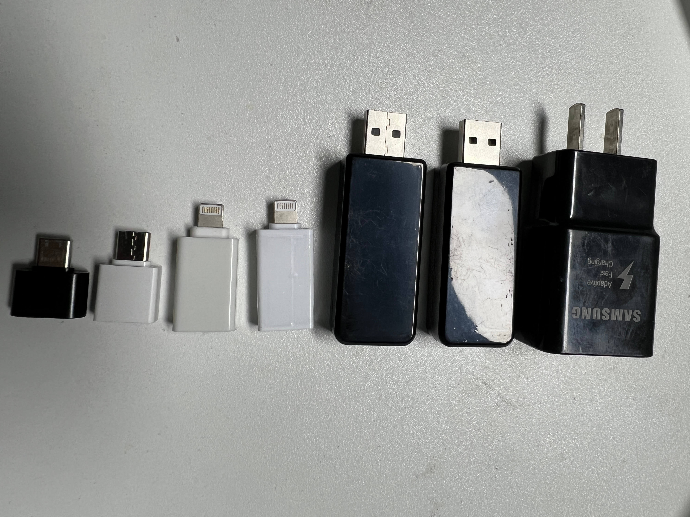
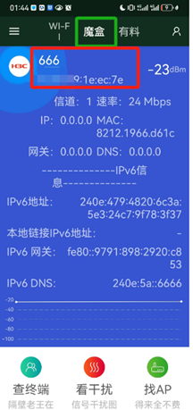
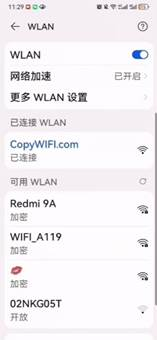
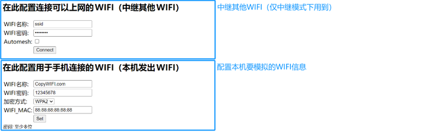
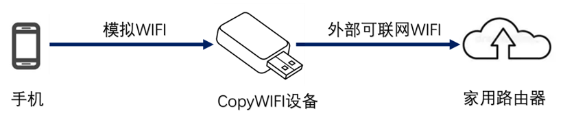
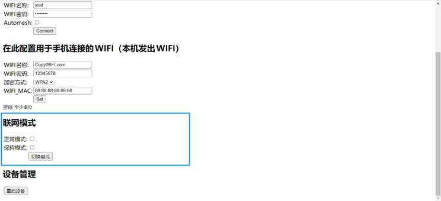
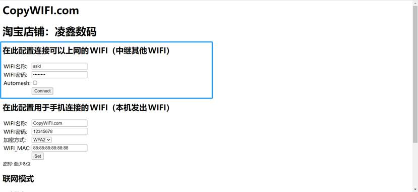
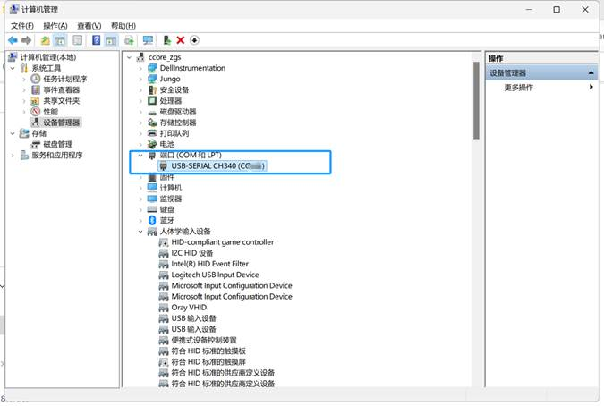

海居打卡信号模拟器-用户手册
CopyWIFI.com

V2.1版本
一、应用场景
WIFI是目前应用最广泛的无线通信方式，除了用来上网外，其信号本身可以用作其他用途，例如：
1、 物联网环境下，根据WIFI信号识别物联网设备编号
2、 地图应用软件中，根据WIFI信号判断与目标位置距离
WIFI信号本身包括两个特征：
1、 名称（SSID），就是手机上搜索到的WIFI名字
2、 MAC（BSSID），底层通信用的每个设备固有地址
（注意：IP地址不属于WIFI信号特征，跟网络环境相关）
二、使用方法
.files/WIFI真诚的教学(1)157.png)
.files/WIFI真诚的教学(1)194.png)
.files/WIFI真诚的教学(1)250.png)
.files/WIFI真诚的教学(1)370.png)
.files/WIFI真诚的教学(1)582.png)
使用方法主要包括以下几个步骤
1、 获取WIFI特征
即抓取要模拟的目标WIFI的特征信息（名称和MAC）
2、 复制WIFI特征
配置CopyWIFI设备，让设备发出与目标WIFI特征相同的模拟WIFI信号
3、 选择上网模式
配置CopyWIFI设备，让手机连上设备发出的模拟WIFI信号后可以上网
4、 手机连接使用
手机连上设备发出的模拟WIFI信号，然后打开应用软件使用
下面将逐条详细讲解：
1、 获取WIFI特征
l 在手机应用市场中搜索“WIFI魔盒”，下载软件
l 手机连接目标WIFI信号，然后打开“WIFI魔盒”软件；点击上方的“魔盒”按钮

l 红框里面的信息即为目标WIFI的名称和MAC；截图保存
l 详细流程，参考（视频教程-采集WIFI信息）
注意：部分手机要求开启定位权限，才能采集到周围WIFI信息
2、 复制WIFI特征
电脑和手机都可以用来配置CopyWIFI设备，优选电脑端配置。
完整视频教程参考（视频教程- 视频教程-手机端配置教程）
以下以图文形式详细讲解配置步骤：
l 手机端
A、 使用手机搜索周围WIFI信息，找到设备发出的WIFI信号、然后连接

提示
ü 设备默认WIFI名称为“CopyWIFI.com”，没有密码
ü 若更新过配置且忘记了配置的WIFI名称，请至空旷处逐个测试仅存的WIFI名称、或恢复出厂设置
ü 若将设备配置为了“保持模式”（非连接模式），一直转圈无法成功连接，请至（常见问题-无法成功连接模拟WIFI）
B、 打开手机浏览器，输入192.168.4.1，进入后台管理界面

提示
ü 若无法访问管理界面，请至（常见问题-无法访问192.168.4.1）
ü 若页面加载得不完整，通过浏览器刷新页面
C、 在“在此配置用于手机连接的WIFI（本机发出WIFI）”栏目中填入要模拟的目标WIFI特征信息，然后点击Set
D、 观察到设备灯熄灭、再重新亮起；代表配置已经下发
3、 选择上网模式
完成WIFI特征复制后，设备就能发出跟目标WIFI一模一样的WIFI信号。
但是这个WIFI信号本身是不能上网的，有两种上网方式可供选择：
l 正常模式（中继模式、连接模式）
这个是设备恢复出厂设置后的默认模式
在这种模式下，设备需要中继一个外部其他可以联网的WIFI信号，才能让手机接入模拟WIFI后可以上网
手机上网请求先经过CopyWIFI设备，再传递到家用路由器，示意图如下：

提示
ü 大部分安卓手机支持“WIFI加速”功能，即如果手机连接到的WIFI不能上网、会使用流量上网，这样就省略了“中继其他WIFI”的繁琐步骤（视手机机型而定、不能保证稳定可用）
ü 该款设备在中继模式下，上网速度不快；在使用时候建议关闭手机上不相关软件
l 保持模式（转圈模式，非连接模式）
这个模式下关闭了DHCP，即CopyWIFI设备不会主动给手机分配IP地址，手机始终处于“连接WIFI”状态
但是应用软件会认为已经连接到了目标WIFI；同时手机会使用自己的流量上网、这样就省略了“中继其他WIFI”的繁琐步骤。
推荐使用这个模式。
提示
综上所述，总共支持以下三种上网方式：
1、 把设备配置在“保持模式（转圈模式，非连接模式）”，手机尝试链接WIFI会转圈、但是软件任务已经连接到了指定WIFI，手机通过自身流量上网
2、 把设备配置在“正常模式（中继模式、连接模式）”，手机开启“WIFI加速”功能，使用自身流量上网
3、 把设备配置在“正常模式（中继模式、连接模式）”，让设备中继其他可联网WIFI，手机通过模拟出来的WIFI间接上网
优选方式1
下面介绍模式切换方法：
手机端：
A、 连接设备发出的模拟WIFI，访问192.168.4.1
B、 在联网模式栏目中，选择要切换到的模式，再点击“切换模式”按钮

C、 观察到设备灯熄灭、再重新亮起；代表配置已经下发
D、 若新模式为保持模式（非连接模式）、或想使用“WIFI加速功能”，可以忽略后续步骤：
E、 重新连接WIFI，访问192.168.4.1管理界面；在“在此配置连接可以上网的WIFI（中继其他WIFI）”栏目中输入上行WIFI信号（家用路由器WIFI或其他手机热点），然后点击“Connect”按钮

F、 观察到设备灯熄灭、再重新亮起；代表配置已经下发
提示
ü 优选保持模式（非连接模式），若不能使用再切换到中继模式
ü 大部分苹果手机只支持保持模式
4、 手机连接使用
手机连接模拟WIFI，然后打开应用软件，测试是否可用
若手机无法上网，请至（常见问题-手机无法上网）
提示
ü 保持模式（非连接模式）下，连接WIFI后，会一直转圈、提示连接中，不要管它，直接切换到应用软件界面
ü 正常模式（中继模式、连接模式）下，连接WIFI后，手机会提示“当前WIFI不能上网”，是否继续使用，点击使用
三、常见问题
l 浏览器提示找不到设备
请按以下步骤排查：
1、 确保浏览器版本不要太老，推荐使用360或者chrome浏览器
2、 确保没有其他浏览器窗口占用该设备，把不必要的窗口全部关闭
3、 打开电脑设备管理器，确保“端口”栏目里面有“USB-SERIAL CH340”设备，没有黄标

若没有显示该设备、或出现黄色标志，则代表驱动没有装好
4、 更换浏览器再试
5、 重启电脑再试
6、 更换电脑再试
7、 放弃“电脑端”配置方式；转而采用“手机端”配置方式
l 无法成功连接模拟WIFI
请按以下步骤排查：
1、 确保没有将“目标WIFI”和“模拟出来的WIFI”放在同一地点，因为同一地点有两个一模一样的WIFI信号、会导致通信失败
2、 若当前设备模式处于“保持模式”（非连接模式），则需要自行分配IP地址，参考（视频教程-手工分配IP地址），或者短暂按下设备尾部按键、开启IP分配
l 手机无法访问192.168.4.1
请按以下步骤排查：
1、 关闭手机的移动数据网络功能，再试
2、 确保连接到了设备发出的模拟WIFI，而不是目标WIFI或其他WIFI
3、 确保在浏览器中输入是的192.168.4.1（英文）
4、 部分浏览器会使用搜索引擎搜索192.168.4.1，而不是直接访问192.168.4.1
遇到这样情况可以考虑更换浏览器，如UC浏览器
5、 更换手机再试
6、 换用电脑连接模拟WIFI，然后电脑浏览器输入并访问192.168.4.1
7、 放弃“手机端”配置方式；转而采用“电脑端”配置方式
l 手机无法上网
请按以下步骤排查：
1、 若设备处于中继模式，且设备没有中继外部可联网WIFI
确保手机打开了“WIFI加速/网络加速”功能、并且打开了移动数据网络开关
2、 若设备处于中继模式，且设备中继了外部可联网WIFI
A、 确保设备中继外部WIFI成功，可以登录家用路由器管理界面、判断CopyWIFI设备接入成功
B、 确保手机上没有运行其他不相关软件，确保手机要求上网速率不高
3、 若设备处于保持模式（非连接模式）
确保手机开启了移动数据网络开关
4、 以上三个方法，方法2只要配置正确，就一定能上网；其他两个方法视机型而定、不能保证稳定可用
l 每次使用都需要配置吗
仅需配置一次即可，配置信息会自动记录到设备
l 可以多次修改配置吗
可以多次修改配置
若直接修改配置不成功，可以尝试先恢复出厂设置
l 可以插到手机上使用吗
只要是USB接口，就可以把CopyWIFI设备插入、能供电就能用
如果需要插手机上使用，需要搭配转接头（TypeC或苹果转接头）、将手机接口转换成USB接口使用
l 插到手机上设备灯不亮
部分机型（VIVO/OPPO）需要手工开启OTG反向外部供电功能，可以在设置里面搜索
l 苹果手机可以使用吗
可以
l 上网速度太慢了怎么办
换用本店其他设备，随身WIFI或随身路由器
l 忘记WIFI密码了怎么办
重新配置WIFI信息，或者恢复到出厂设置（可以长按按键来恢复出厂配置）
l 是否支持5G频段WIFI
只支持2.4G频段
对于5G频段信号，同样可以直接模拟；应用软件不会甄别是5G还是2.4G信号
l 中继时候搜索不到其他手机热点或家用路由器WIFI
保证手机热点或家用WIFI频段是在2.4G
l CopyWIFI.com网页打不开
备用网址：https://evilusb.com/copywifi/
l 是否支持中文WIFI信号
支持
四、视频教程
l 采集WIFI信息
https://copywifi.com/mp4/058836258b0e6cf61876cc5e0b8b7879.mp4
l 手工分配IP地址
https://copywifi.com/mp4/d4539e8ecc3f923e548ee8dff9593664.mp4
l 手机端配置教程
https://copywifi.com/mp4/edececb588b10c4f96499eb433a82688.mp4
l
五、合作方式
包括不限于以下合作方式：